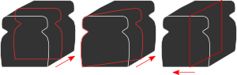

CHRONOCHROME
This page contains links to supporting visual documentation for Joe Halliwell's Chronochrome project.
Prototype work
 I have written some prototype software to explore these ideas. Processing digital video in real-time is highly computationally demanding. In order to secure the desired level of performance, the prototype is written in the low-level programming language C and carefully restricts both the spatial and temporal resolution.
Test #1
Test footage from the prototype. This was captured live. For this effect the X and time axes are swapped in realtime. Stationary objects disappear into bands of rich colour. Moving objects appear still with temporal echoes of varying degrees of distortion.
Test #2
More test footage and an example of the possibilities for playful interaction the prototype inspires.
One of the key goals of the project is to eliminate the blockiness shown here which is due to using a consumer-grade web camera to perform the video capture.
Test #3
Since Chronochrome operates in realtime it is possible to achieve feedback effects by pointing the camera at the output. This shows ghostly echoes of previous images the camera has recorded.
Some additional footage is available on my youtube profile.
Photo diary
Some snapshots from the development of the prototype are available on my flickr gallery.
Thanks
Thanks to Daniel Winterstein for his support and assistance with this project.